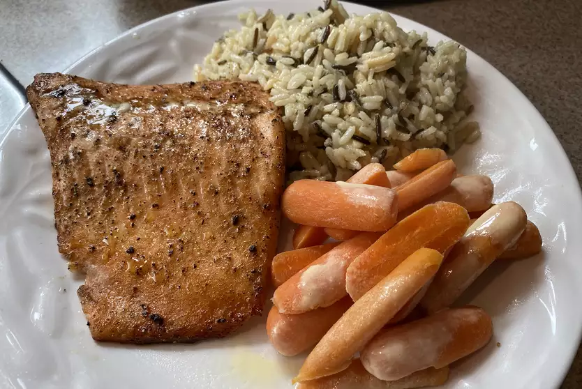

Salmon

Desription
Its fancy salmon. Got like maple and stuff. Salmon is a fish
Ingredients
- 1 1/2 tsp salt
- 1 tsp paprika
- 1 tsp ground cardamom
- 1 tsp ground coriander
- 1/2 tsp ground black pepper
- 1/4 cup grapeseed oil
- 2 tbsp maple syrup
- 1 salmon fillet, cut into 3 inch pieces
Steps
- Stir salt, paprika, cardamom, coriander, and black pepper together in a bowl. Add oil and maple syrup; stir until evenly combined.
- Preheat a nonstick frying pan over medium-high heat.
- Dredge salmon pieces through maple syrup mixture until evenly coated on all sides.
- Cook salmon in the preheated pan until fish flakes easily with a fork, 5 to 7 minutes per side.